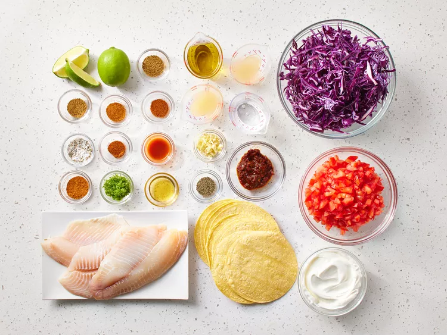
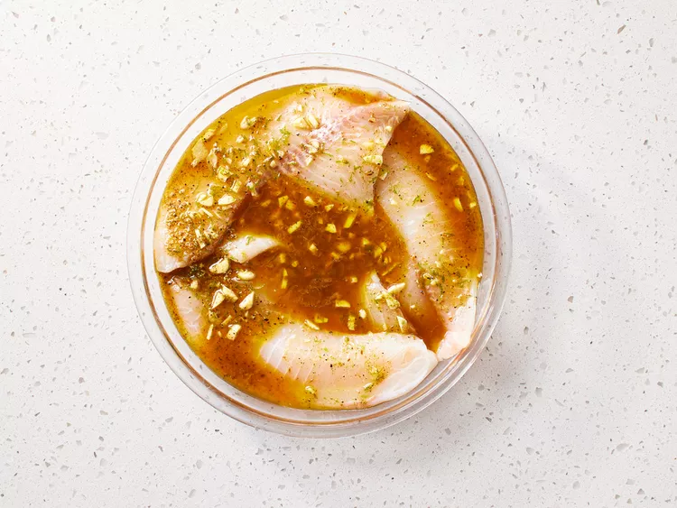
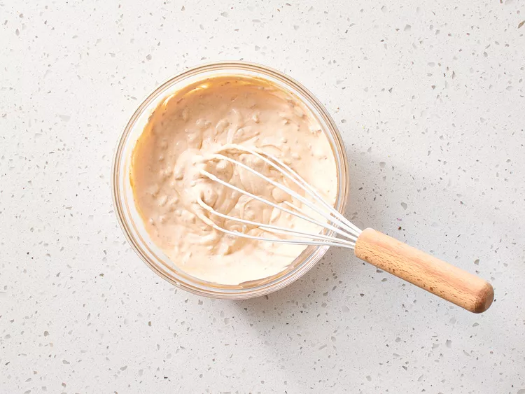
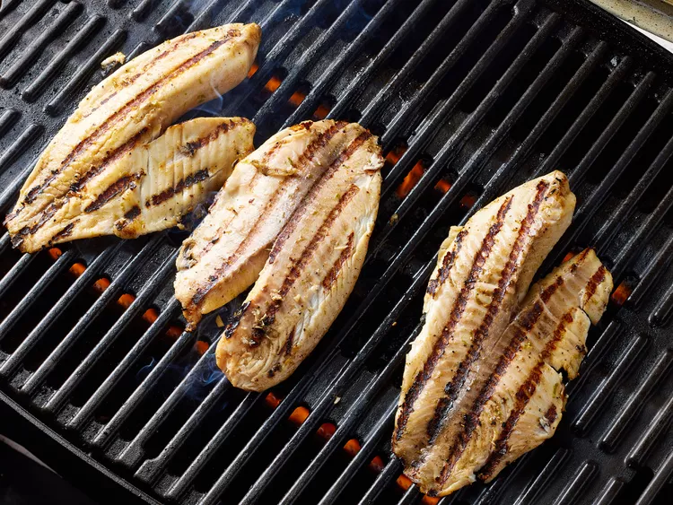
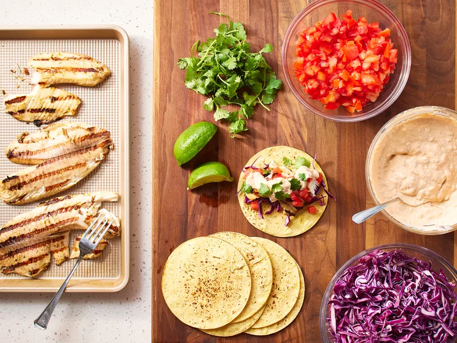
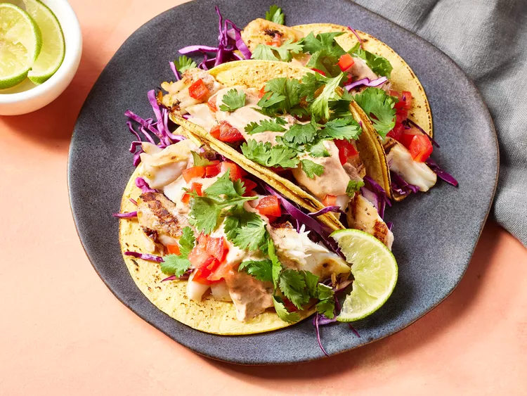

Best Grilled Fish Tacos
As soon as I saw the words Cilantro and chipotle in the same sentence
with the word taco, I thought this was going to be an awesome recipee.
I'm deffinitely going to try it one day, and see if it lives to the
Mexican standard (looks like it will).
Ingredients
You will need a different set of ingredients for each part of the recipee.
Here they are:
Marinated Fish:
- 1/4 cup extra virgin olive oil
- 2 tablespoons distilled white vinegar
- 2 tablespoons fresh lime juice
- 2 teaspoons lime zest
- 2 cloves garlic, minced
- 1 1/2 teaspoons honey
- 1 teaspoon seafood seasoning, such as Old Bay
- 1 teaspoon hot pepper sauce, or to taste
- 1/2 teaspoon cumin
- 1/2 teaspoon chili powder
- 1/2 teaspoon ground black pepper
- 1 pound tilapia fillets, cut into chunks
Dressing:
- 1 (8 ounce) container light sour cream
- 1/2 cup adobo sauce from chipotle peppers
- 2 tablespoons fresh lime juice
- 2 teaspoons lime zest
- 1/2 teaspoon seafood seasoning, such as Old Bay
- 1/4 teaspoon cumin
- 1/4 teaspoon chili powder
- salt and pepper to taste
Assembly:
- 1 (10 ounce) package tortillas
- 3 ripe tomatoes, seeded and diced
- 1 small head cabbage, cored and shredded
- 1 bunch cilantro, chopped
- 2 limes, cut in wedges
Directions
- Gather all ingredients

- To marinate the fish: Whisk olive oil, vinegar, lime juice, lime
zest, garlic, honey, seafood seasoning, hot pepper sauce, cumin, chili
powder, and black pepper together in a bowl until blended. Place tilapia
in a shallow dish; pour marinade over fish. Cover the dish with plastic
wrap and refrigerate for 6 to 8 hours.

- To make the dressing: Combine sour cream and adobo sauce in a bowl.
Stir in lime juice, lime zest, seafood seasoning, cumin, and chili powder
. Add salt and pepper to taste. Cover and refrigerate until needed.

- Preheat an outdoor grill for high heat and lightly oil the grate.
Set the grate 4 inches from the heat.
- Remove fish from the marinade, drain off any excess and discard the
marinade. Grill the fish pieces until easily flaked with a fork, turning
once, about 9 minutes.

- To assemble the tacos: Place fish pieces in the center of tortillas
and top with desired amounts of tomatoes, cabbage, and cilantro: drizzle
with dressing.

- To serve, roll up tortillas around fillings, and garnish with lime
wedges.

You can use mahi mahi, cod, or any firm white fish fillets instead of
tilapia.
If you prefer to bake the fish, preheat the oven to 350 degrees F (175
degrees C). Bake in the preheated oven until fish flakes easliy with a
fork, 9 to 11 minutes. Assemble tacos according to directions.